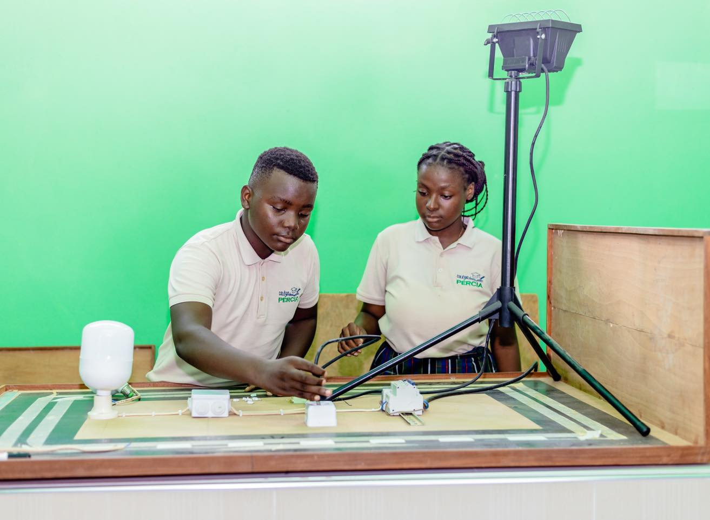
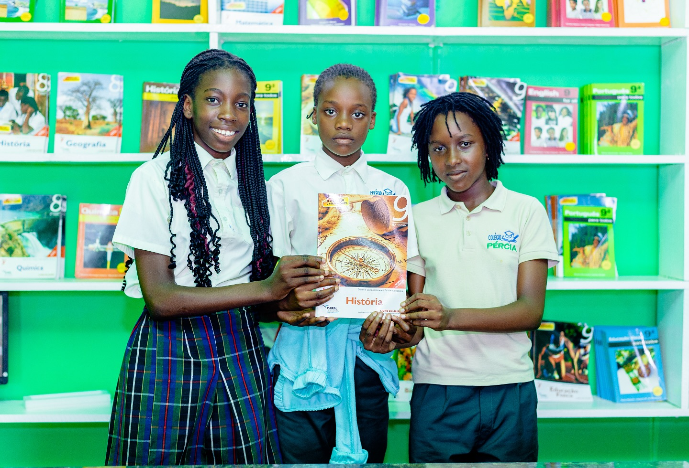
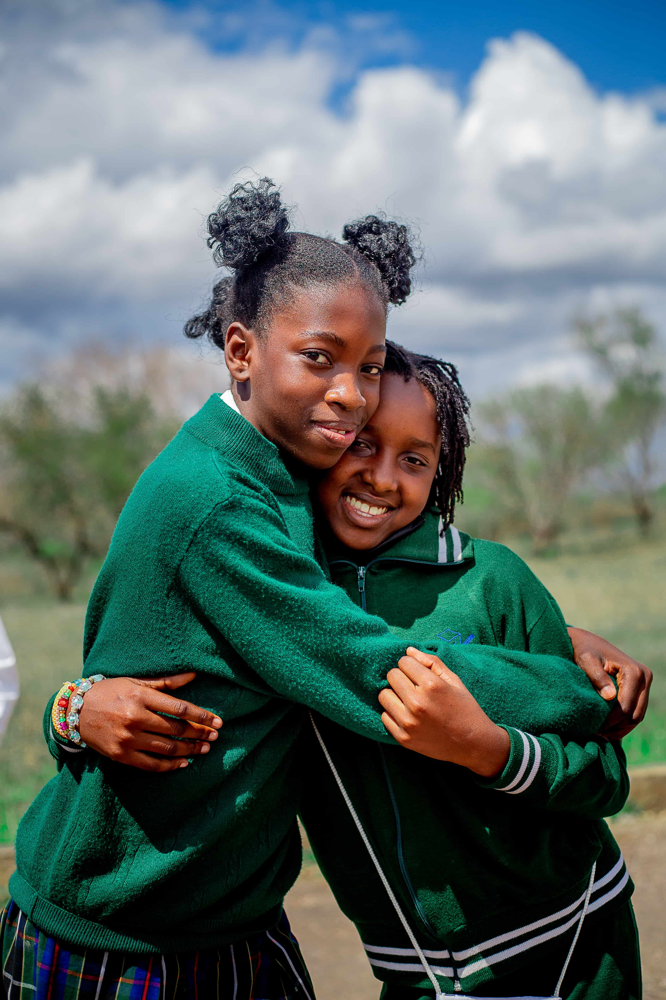
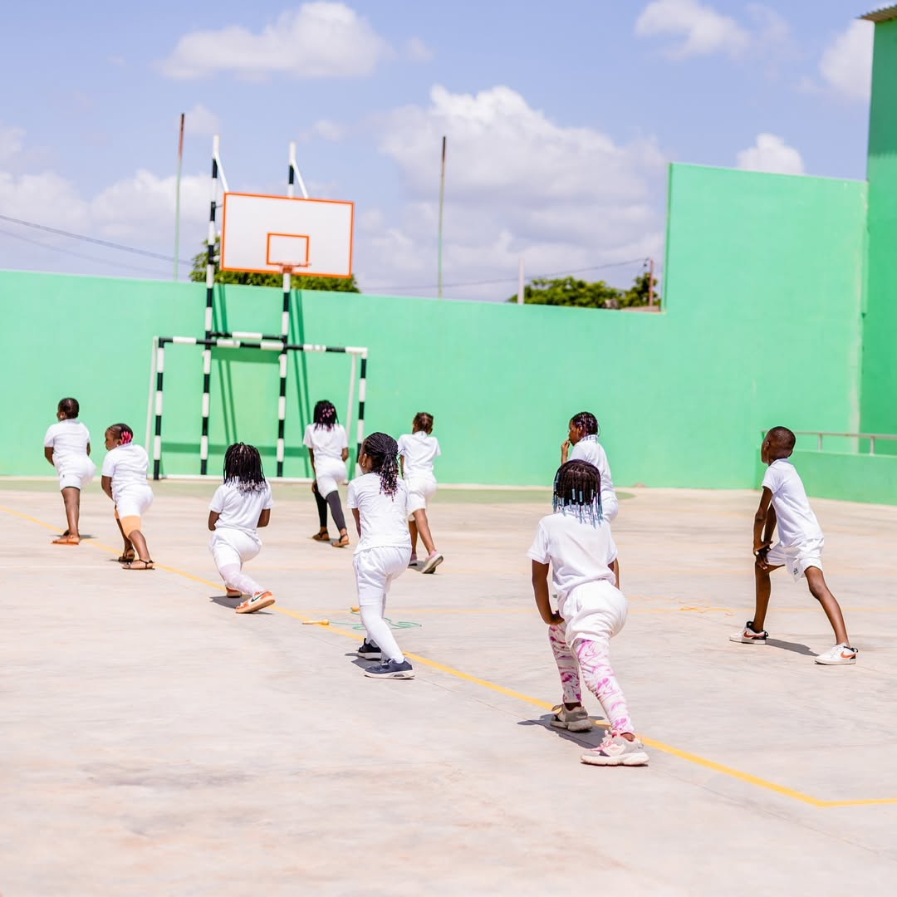

Sobre o Colégio Pércia
O Colégio Pércia é uma instituição de ensino privada localizada em Intaka 2, na Cidade da Matola, Moçambique. A escola oferece ensino da 1.ª à 12.ª classe, seguindo o currículo nacional moçambicano, e complementa a formação académica com actividades extracurriculares.
O nosso compromisso é proporcionar um ambiente de aprendizagem estruturado, seguro e estimulante, onde cada aluno possa desenvolver o seu potencial académico e pessoal.

Missão e Abordagem
Educação com propósito, acompanhamento e dedicação
Corpo Docente Qualificado
A equipa pedagógica do Colégio Pércia é composta por professores experientes e dedicados ao desenvolvimento académico e pessoal dos alunos.
Instalações Adequadas
O Colégio dispõe de laboratórios, biblioteca, sala de informática e espaços de convivência que apoiam o processo de ensino e aprendizagem.
Apoio Pedagógico
Disponibilizamos reforço escolar e acompanhamento personalizado para alunos que necessitem de apoio adicional no seu percurso académico.
Localização Central
Situado em Intaka 2, na Cidade da Matola, o Colégio é acessível a partir das principais zonas da cidade. Dispomos também de serviço de transporte escolar.
As Nossas Instalações
Espaços preparados para apoiar o processo de aprendizagem





Quer conhecer os nossos programas?
Consulte os níveis de ensino, disciplinas e actividades extracurriculares que o Colégio Pércia oferece.